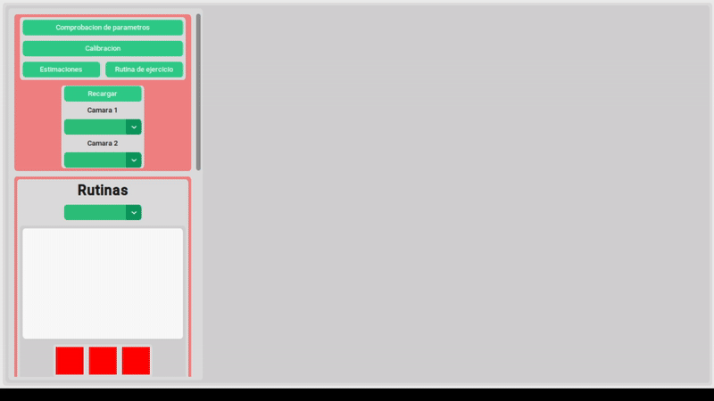

PROYECTO FINAL SAMSUNG INNOVATION CAMPUS 2024
SISTEMA DE REHABILITACIÓN BASADO EN ANÁLISIS BIOMECÁNICO Y VISIÓN ESTÉREO
Opciones del menú

Apartado para consultar todos los datos recopilados y para crear rutinas de ejercicios
Apartado para clasificar las posturas del paciente a lo largo de cada ejercicio de una rutina especifica